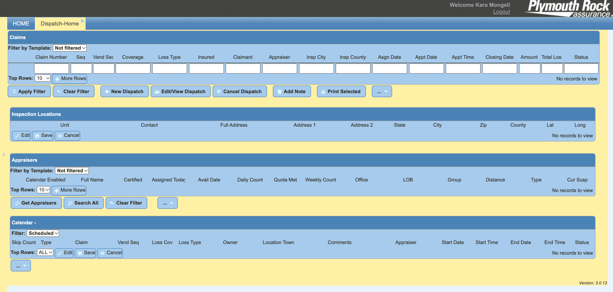
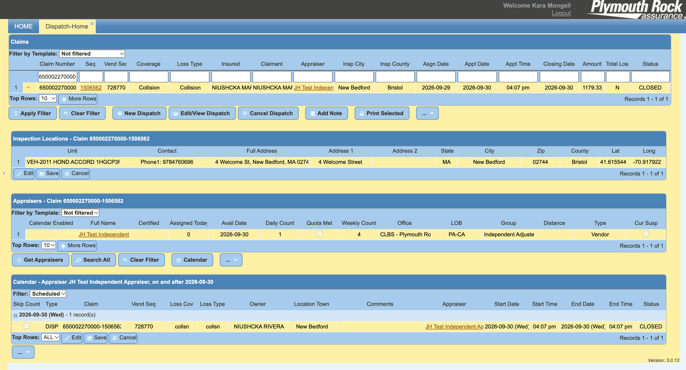
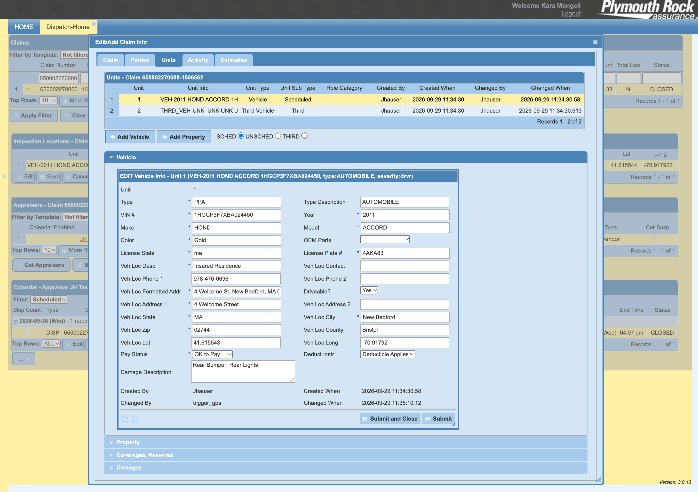
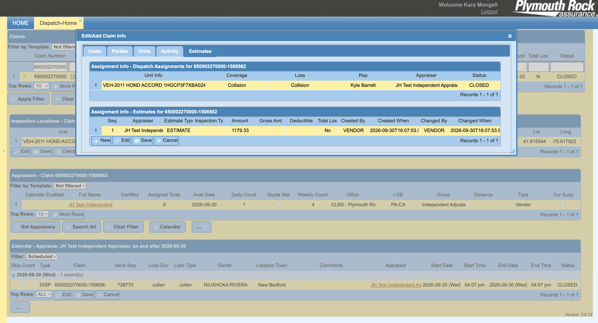
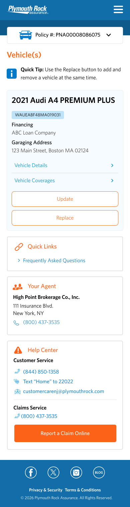
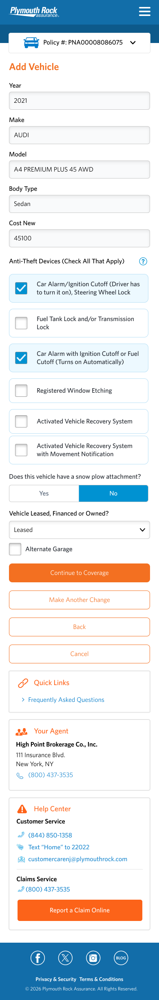
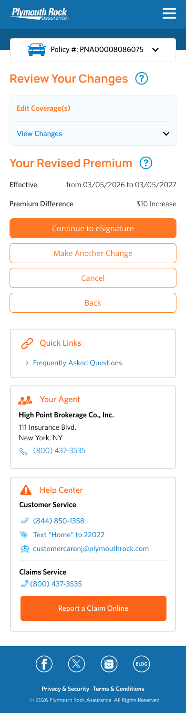
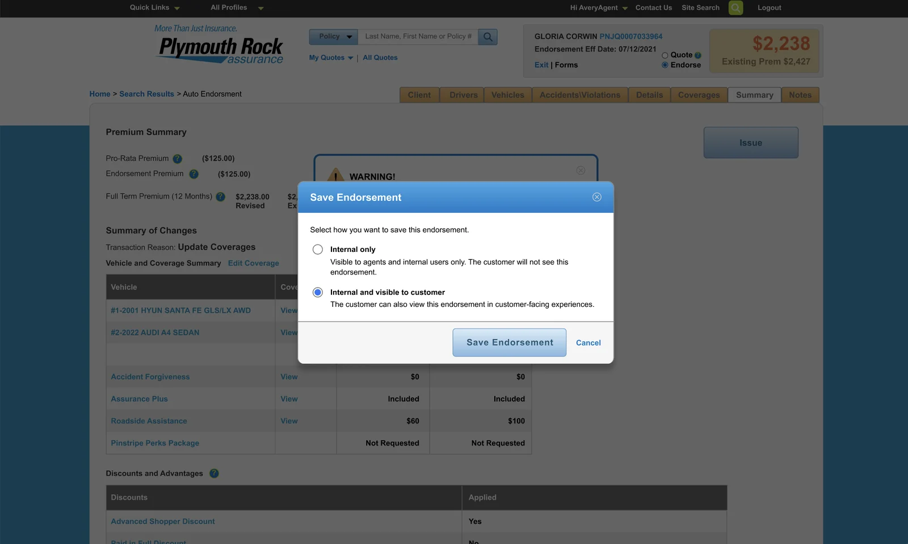

Currently UX Designer @ Plymouth Rock Assurance.
Previously Lead Senior Designer @ Scratch Marketing + Media.
Product designer with 10+ years of combined experience of branding and UX design, shaping digital products across various industries and their verticals, including SaaS, biotechnology, and insurance. Experienced in translating messy requirements, vague and complex experiences into effortless tools for customers or internal use-alike. Brings a practical, collaborative approach that balances user needs, technical realities, and business goals.
Portfolio is under construction, pardon the appearance.
Redesigning a complex operational workflow into a clearer, more efficient experience, without oversimplifying the technology behind it.
Role
Lead Product Designer
Team
Digital Strategy, Claim Ops, Development
Platform
Internal web tool
Timeline
2025–2026
+ The Challenge
Not less information. The right information, at the right moment.
eDispatch is a digital tool that insurance appraisers, adjusters and claim agents utilize to support claims and estimating auto and home damages. The job wasn't to cut what was on screen. It was to decide which information mattered, when it mattered, and how the interface could help people decide faster.
The tool was one part of a whole ecosystem with multiple supporting tools that appraisers and dispatchers have to use to complete their job. Each piece did its job on its own. The trouble was everything in between: nothing talked to anything else, so the dispatcher became the integration layer, making them hold the full picture in their head.




Where to start? Outdated information hierarchy.
+ Reframing the Problem
The original ask
"We have two versions of this and it's outdated. Can we update the existing tool and migrate the tool into one?"
The real problem
How might we make a complex operational system feel understandable and efficient for the people using it every day?
A visual refresh would have made each broken piece look better and left the gaps between them untouched. Reframing the brief around the full workflow changed the project's scope, the success metrics, and who needed to be in the room.
So I didn't treat this as a visual redesign. I treated it as a workflow and information-design problem.
+ Finding the Root Cause
Watch the work, not the software.
I interviewed various people with different roles to understand how exactly the workflow is experienced. Watching them work revealed where gaps were and how different it is for different role types.
Multiple stakeholder and user interviews...
Spoke to claims operation directors, adjusters, appraisers — associates and supervisors — to learn what their day-to-day looks like using the tool.
...led to an end-to-end workflow map
A visual of every step from intake to assignment, color-coded by tool, with each handoff and failure point marked.
After listening to the users, I sat down and mapped out all the tools and touchpoints for each user type. I wanted to see how each of these pieces related to the others.
+ Key Decisions
Three decisions shaped by research
Six stakeholder interviews and a prototype test with three claims users pointed the redesign toward speed, structure and fewer systems.
01
Guided flow over an all-in-one table
GRPVirtualStaffIAPTL
Next: Search All for experienced reps
Insight
Reps offer options in a set order, but the legacy tool showed everything in one table.
Decision
Selection follows that conversation, one step at a time.
Result
Matched how most testers work. Power users asked to see every option at once.
02
Designed for the live phone call
NameTypeDistance
Shop address + phone
Copy
Insight
Nearly all dispatches happen live, then reps text shop details to the customer.
Decision
Key fields stay visible without scrolling. Address and phone lead each profile.
Result
One-click copy and auto-texting became the clearest next step.
03
One connected system, not another silo
Legacy DispatcheDispatchClaimsProMitchell
One dispatch tool, synced to the claim
Insight
Every participant switched between four tools and re-entered the same data.
Decision
One tool, launched from the claim, with changes syncing back.
Result
Auto-sync drew one of the strongest reactions in testing.
+ The Solution
The platform in action: searching a claim, reviewing its details, then transmitting the dispatch to a vendor.
Transferring a dispatch had to be effortless — stakeholders needed it fast during high-CAT events and workload balancing.
Images and documents lived across too many tools. We wanted one single source of truth for every asset tied to an estimate.
Expanded prototype available for a walkthrough.
+ What I Learned
Question the brief. The request was a redesign. The problem was a workflow. Pushing back early, with evidence, saved the team from polishing the wrong thing.
Field people are users too. People who are out on the road are not often questioned about the tools they use. Getting a chance to speak to them and show them concepts was rewarding in itself because they shared appreciation of being asked to be part of something.
Trust is a rollout strategy. Shipping in phases let Claims Ops see results before being asked to give up legacy tools they knew.
app downloads in 6 months after the relaunch I led
$0 → $1.1M
client divisional revenue in under a year
Current June 2021 Present · Boston, MA
Plymouth Rock Assurance
UX Designer · formerly Associate UX Designer
Native mobileInternal toolsClaimsTelematicsVoice
+Led UX/UI design for the relaunch of a native mobile app, streamlining the insurance experience for policyholders. Continued driving mobile-first strategy for policy endorsements, claims processing, and telematics.
+Led the redesign of multiple legacy internal systems with broken workflows, partnering with stakeholders and interviewing end users. Projected to reduce system errors and improve response times for claim dispatches.
+Worked with developers to design a voice-only [finish this line].
+Designed across multiple digital products with a customer-focused, iterative process, from business and IT requirements through delivery.
June 2016 June 2021 · Cambridge, MA
Scratch Marketing + Media
Senior Design Lead · formerly Senior Graphic Designer and Graphic Designer
Web designBrandingCampaignsTeam lead
+Conceived and implemented concepts, guidelines, and strategies from ad campaigns to website builds, including a campaign that took a client's division from $0 to $1.1M in revenue in under a year.
+Launched multiple websites at a range of scales, from branding and concept through wireframes, prototypes, and hand-off to development.
+Worked with VPs on scheduling and project management, and managed up to two junior designers.
+Created UX/UI best-practice guidelines for the agency's growing web design practice.
Feb 2015 June 2016 · Cambridge, MA
NuoDB
Marketing & Design Intern
+Updated templates to follow newly redesigned brand guidelines.
Letting customers explore a policy change before committing to it.
Role
UX Designer
Team
Digital Strategy, Product, Development
Platform
eService, Mobile App, Agent Web
Timeline
August 2026
+ The Challenge
A policy change shouldn't require a commitment.
Customers who want to add a vehicle or a driver often just want to know what it will cost. The existing endorsement experience assumed they were ready to complete the change right away, or sent them to the phone for help.
The goal was to let customers start, save, and return to a quote on their own, and to let agents and employees continue the same quote alongside them.

[Caption]

[Caption]

[Caption]
+ Reframing the Problem
The original ask
"Let customers save an endorsement in progress."
The real problem
How might we let people price a policy change without feeling like they've made one?
Saving was the feature. The real work was the line between a quote and a commitment: what the customer sees, what the system changes, and who else can pick the quote up.
+ Key Decisions
Rules, translated into design
The requirements were precise. The job was making them feel simple.
01
A quote is never mistaken for a change
Start/Continue Quote
Make a Policy Change
The rule
A quote must never change the policy, and must be clearly different from an endorsement.
The design response
Two doors at "Update Policy," a Quote or Endorsement label on every screen, and the line "No changes have been applied to your policy."
What it protects
The customer's confidence that exploring costs nothing.
02
Ask for less, carry everything forward
YearMakeModelOwned or financed
VINOptional
The rule
Partial data is allowed for a quote, but required at submission.
The design response
Ask only for the minimum to price the change, tag the rest as optional, and ask only for what's missing at conversion.
What it protects
Momentum, so people don't stall over a VIN they don't have yet.
03
Saved automatically, with the terms in plain sight
Quote saved until MM/DD/YYYYResume
Reminder email two days before it expires
The rule
Quotes autosave, expire after 7 days of inactivity, and only one can exist per policy.
The design response
A visible expiry date, a reminder two days out, a continue-or-replace prompt, and clear messaging when someone else has the quote open.
What it protects
Trust in what's saved, with no surprise deletions.
+ The Solution
01
Choose a path
Start or continue a quote, or make a policy change. The screen always says which one you're in.
02
Enter the minimum
Only what's needed to price the change. Everything else can wait.
03
See the estimate
Current premium, estimated new premium, and the difference, saved automatically.
04
Save and close, or process
Come back within the saved window, or convert the quote into an endorsement.
The core flow in the mobile app. Nothing changes on the policy until the customer processes the change.
Saved quotes appear on the homepage with an expiry countdown. Resuming one lands on the premium screen with a summary of the change and the quoted premium.
If a quote already exists, the customer chooses to continue with it or start a new one.

In Agent Web, agents choose how to save: internal only, or visible to the customer in customer-facing experiences.
Expanded prototype available for a walkthrough.
+ Designing for the Edges
The cases that make or break trust.
Locked quotes
Only one person can have a quote open at a time. Anyone else sees a clear message to try again later.
Past effective dates
Quotes can't be backdated. Retrieving one with a past date prompts for a new date and reprices.
Renewal overlap
When a renewal is already issued, the estimate shows both the current and renewal terms.
One quote per policy
Starting a new one asks first: continue the saved quote, or replace it.
Blocked endorsements
Rating and saving still work. The block is checked after rating and before issuing.
Rating errors
If rating fails, inputs are kept and the customer can retry without starting over.
+ What We're Measuring
Planned signals to watch.
This enhancement hasn't launched yet at the time of creating this case study. These are the metrics planned to watch and learn from once it does, tracked across eService, the mobile app, and Agent Web.
Quotes started How many people tap Save for Later and see the confirmation modal
Quotes saved How many people actually save the quote
Quotes retrieved How many people access saved quotes from the homepage
Quotes converted to endorsements How many people continue to purchase after saving a quote
Restarts after expiry Signals whether the saved window is long enough
Blocks and errors Tracked with the reason, to guide improvements
+ What I Learned
Design both sides of the quote. A saved quote isn't only a customer feature. Agents and employees manage the same policies, so the flow had to work for both: a quote started by an agent can be handed to the customer, and a customer's quote can be picked up by an agent, with clear messaging about who has it open so no one loses work. Designing those handoffs mattered as much as the Save button itself.